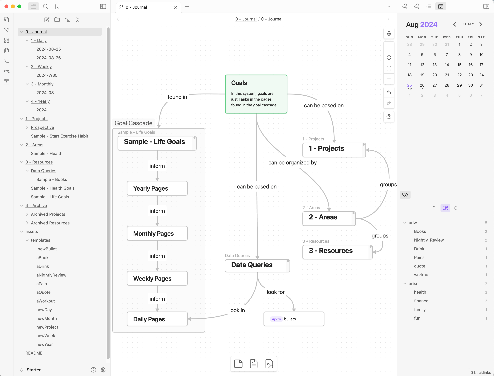

Making An Obsidian Bullet Journal
System Design. Obsidian.

Details
Generic system design. Honestly not my best work. Tried to do too much. Obsidian-based Project Management System is better.
Unfinished
This page was never finished. Also - the whole thing I stopped using after a few months. Turned out not to be the best idea I’ve ever had in terms of data capture.
Obsidian is an app I first wrote about in May 2021 primarily for note taking & personal knowledge management, but can be used in many other ways. Bullet Journals I covered in Column #460. This page describes how I built a system approximating a digital bullet journal using Obsidian, some plugins, some Siri Shortcuts, my PDW, and some elbow grease.
This whole setup will look complicated1… but using it is as fast and easy as possible.
Results
Each of these are explained further below.
- enable Periodic Reviews
- enable Rapid Logging throughout the day
- including basic Task Management
- support Drawings & Doodles
- support Habit Tracking & other collections
- move my PARA from Notion
How Stuff Works
Demo vault available!
If you’re interested in trying it out, I made a smaller version with a demo/starter vault!
Structure
The system is still maturing, but pretty usable as-is - not perfect, but every element in it is there for a reason. I know up front this is going to look complicated - and that’s cause it is, but complicated can sometimes been easy.
The system has a few main components:
- A hierarchical journal - folders containing pages for days, weeks, months, & years
- Projects & Areas pages
- Templates for creating full pages and specific bullet types very quickly
- Saved queries to collect and collate data in useful ways
Plugins
Obsidian has 1700+ plugins. This system uses a few of them extensively. The typical heavy-hitters are all here.
- Essential
- Dataview - used for pulling tasks around & pulling PDW Data together
- Templater - used for building periodic note & creating PDW data easily
- Periodic Notes - used for the anti-fragile-like hierarchy of notes
- Calendar - a calendar widget for jumping to daily & weekly notes
- Nice to have
- Tasks - some features to make task entry slightly easier
- Natural Language Dates - allows entry of tasks for ”@ next Tuesday”
- Folder Notes - some of my folders lend themselves to having an index page
- Commander - for super-charging menus & whatnot with templater commands
Periodic Reviews
So much of what makes a bullet journal work as a system is the interlinking of contents across different time scales. The “official” bullet journal system includes a spread for a whole year, spreads for each month, and daily logs (see Rapid Logging) Many folks choose to extend that to include Weekly logs.
Obsidian’s Periodic Notes plugin is perfect for this. The Demo Vault has a Daily < Weekly < Monthly < Yearly hierarchy of periodic notes. Each level has a spot to list goals, and each level provides quick reference access to the goals from the level above it. This allows today’s goals to be based on goals for this week (which were set based on goals for the month, which were set based on goals for the year).
Rapid Logging
Here’s where Obsidian really shines. As a review - “Rapid Logging” is just quickly putting in bullets of information throughout the day. Tasks. Notes. Observations. Quotes. Whatever.
Already in place from the Periodic Reviews (see above) is a Daily Notes folder with a page ready to go for today. That’s where your rapid logging happens. You can add to it in two main ways.
- Open the page. Start typing. Or use a hotkey to a pre-existing template to quickly add specific types of things.
- Use Siri Shortcuts superpowers.
Because Obsidian is just plaintext files in a folder under the hood, you can use Siri Shortcuts to do lots of neat stuff. I can add new bullets, new tasks, even embed and attach new photos to my daily rapid logs all through the tap of a few buttons… and actually I don’t even have to touch anything at all. My phone now adds “leaving home” and “arriving home” bullets automatically every time I leave or enter a small radius drawn around my house.
Task Management
Obsidian is not the best task management system. Recurring tasks, while possible, are really tedious in Obsidian. Mine functions more like a slightly better version of a standard notebook. You can put tasks inline next to other bullets. If you put a due date on them, then those tasks will resurface on the date they are due. Tasks from each “daily” page also show up on the corresponding “weekly” page.
Because of the Siri superpowers, I have a “Initiate Daily Page” shortcut that pulls my calendar events, reminders, and the days forecasts into each day’s daily notes automatically. I start each morning off looking at that now to get an overview of my day. While I’m there, I set some intentions by making a couple of open-ended tasks in the daily log section. You can see that in action in the above screenshot.
Overall the strength of the task management in this system is by how frequently I’m using it.
Drawings & Doodles
Here’s where I’m still not satisfied with the system - and it will never be as good as a regular physical bullet journal. You can embed any old image into Obsidian. So you can create drawings and doodles, screenshot them (or save them) and embed them in Obsidian. Sweet.
I made a Siri Shortcut that adds a “New Photo Bullet” option to the share sheet in iOS. That means I can send something to today’s daily page just as easy as I could send it in a text message.
Obsidian also has a litany of plugins that can streamline this process and effectively bake in the doodle-creation aspect… but I haven’t found one yet that I like. The obvious candidate, “Excalidraw” for Obsidian, bothers me for reasons I don’t need to get into here. You probably wouldn’t be bothered in those same ways, so you should try it out.
Habit Tracking
Habit Tracking in Obsidian is arguably the easiest method I’ve come up with for habit tracking in any form. Thanks to Siri Shortcuts I can have some things tracked automatically, other things I can enter by saying “Siri Track Workout”, and as always I have the fallback of simply opening up Obsidian and typing things in manually.
This I am in the process of extending pretty significantly. See below: Obsidian + PDW = Success?
PARA
PARA stands for “Projects, Areas, Resources, & Archives”. It’s a tool-independent organizational system thunk up by notetaking/productivity guru Tiago Forte, described in this article. I’ve been using it in Notion for as my personal project management solution.
Now that I’ve found a system in Obsidian that works for me on a hour-by-hour basis, being able to link directly into project pages and project-related materials is valuable. So I’m in the process of migrating over Notion-based project & tasks database to something that can live in Obsidian. Resources from PARA and Collections from bullet journaling are essentially the same thing, so that’s already covered. Having “Area” pages is also nice for organizing the rest of the vault. I decided on areas simply being tags (employing Obsidian’s hierarchical tagging capability, all my area tags look like “#area/health” or “#area/family”). Thus the actual page for each area is just a dataview query for that tag.
Obsidian + PDW = Success?
I’m actively in the process of migrating my PDW to an Obsidian-based system. Ever since v10 of the PDW - Like all PDW-related stuff since the epoch of v10, this does not mean abandoning old codebases. The Canonical Data Structure will remain intact, but translations via an Obsidian DataStore Connector will make it feel native to Obsidian.
This technically worked, but was not easy to maintain & created numerous small bugs. I wound up abandoning this approach and reverting the PDW back to Google Sheets.
Data Move: Obsidian → PDW
Data Move: PDW → Obsidian
Demo Vault!
All that craziness up there is well and good, but if you were going to do a “life operating system” in Obsidian the way that many folks use Notion, I’d recommend checking out this demo vault. It doesn’t include any of the Siri Shortcut superpowers (yet)… but it’s still pretty solid.
To use (note: not yet tested)
- Download the zip from that link.
- Extract to a local folder
- Open Obsidian
- In Obsidian → create vault from folder
- Trust plugins and whatnot
- Poke around and look at things
Footnotes
-
and setting it up was complicated, a series of iterative improvements and tweaks ↩